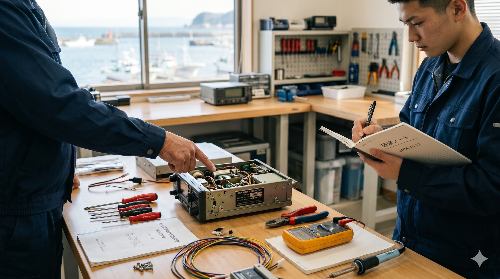
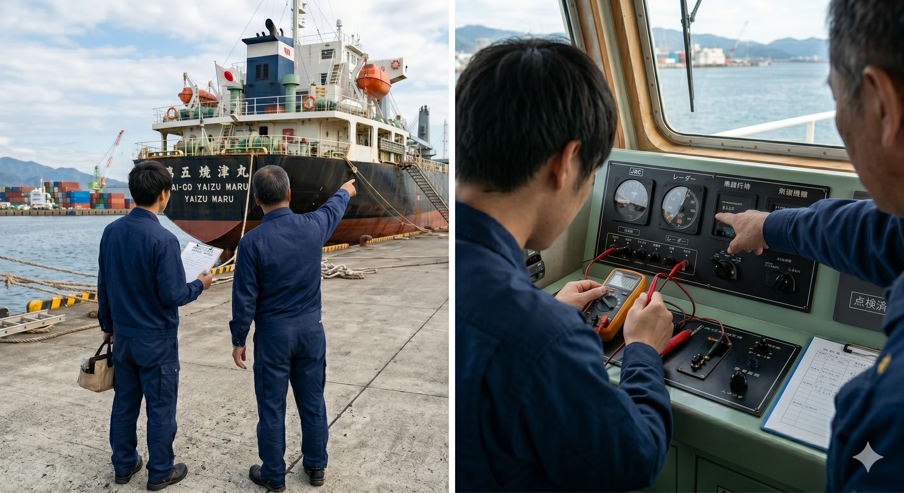
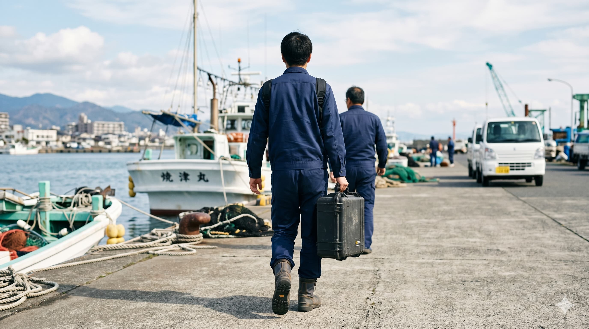
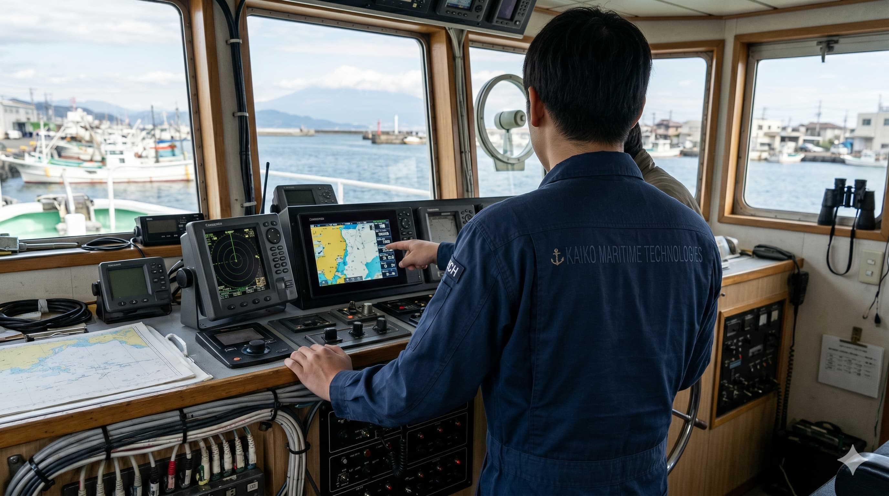

RECRUIT
経験者も未経験も、ここから育てる。地元で一流の技術者へ。

技術が身につく職場
知識ゼロからでも、現場で本物の技術者になれる。
電気・電子・通信が絡む複合技術です。机上だけでなく、船と港で手を動かしながら覚えます。必要な資格の取得費用は会社が全額負担し、先輩と一緒に現場の手順を身につけていきます。

キャリアの見通し
入社からのルートが見える。意欲次第で、裁量はどんどん広がる。
少数精鋭だから、頑張りが直接ポジションに反映される環境があります。「どこまで行けるかわからない」ではなく、1年・3年・5年の到達イメージを持って働けます。

地元で生きていく
転勤なし。焼津で、ずっと暮らし続けながらキャリアを積める。
港を行き来する船の安全を守る仕事は、この街でしかできない仕事です。地元に根を張り、長く誇れるキャリアを積みたい人に合う職場です。

手に職・市場価値
船舶専門技術者は、全国でも数が少ない。だから、価値が高い。
航行安全に直結する設備保守は、短期的な流行で需要が消える型の仕事ではありません。全国でも専門者が不足しており、現場を重ねた人ほど頼られる構造です。積み上げた経験と資格が、そのまま信頼と評価につながりやすい領域です。
未経験から入社した場合の目安です。到達時期や研修の進め方には個人差があります。
入社〜2ヶ月

2〜4ヶ月

4〜6ヶ月

6ヶ月〜1年

1年頃〜

FITは事業を一緒に作る人材を探しています。意欲と成果がそろえば、裁量は短いスパンで広がります。
【キャリアパスのモデルケース】 ※本人の適性や希望、勤務評価に応じて、以下のようなステップアップが可能です。

リーダーとして、顧客の窓口になる。
依頼のヒアリング、見立て、提案の入口に立ち、折衝と現場をつなぎます。チーム内外の調整を担う重要なポジションです。
幹部候補として、経営の隣で事業を動かす。
本人の適性や実績に応じ、採用・育成や事業判断にも関わっていただきます。数字と人を見ながら、会社の伸びしろを「自分ごと」として動かせる段階です。
（※技術を極めたい方は、現場のプロフェッショナルとして活躍し続けるスペシャリストコースも選択可能です）
この会社のかじ取りをしている。
事業の方向性と現場の両方に責任を持ち、次の世代へ渡す土台を作ります。FITが目指す規模へ、核の一人として経営に深く関わります。
役割や待遇は、経験・適性・希望をふまえて面接で丁寧にすり合わせます。技術を極めたい方も、将来のリーダーを目指したい方も歓迎します。
実際の仕事の雰囲気や、現場で大切にしている考え方を動画でご覧いただけます。
働き方や待遇を、数字でわかりやすくまとめました。応募前の目安としてご覧ください。
給与は経験・資格・これまでの実績をふまえて決定します。面接では、現在のご状況や希望も伺いながら、具体的な条件をすり合わせます。
募集内容の詳細は、求人ページでご確認ください。気になる点は面接前のお問い合わせも歓迎します。
船上・港で、通信機器と航海計器のプロとして活躍するポジションです。
船舶通信機器・航海計器の保守点検、修理、設置工事など。経験者・未経験者ともに歓迎です。
仕事内容や条件の詳細は、求人ページでご確認ください。
求人の詳細を見るある1日の流れ
※訪問先・作業内容・所要時間は日によって異なります。あくまで一例です。
応募前に気になりやすい点をまとめました。その他のご質問も、面接やお問い合わせ時に遠慮なくお聞きください。
船舶・無線の前職経験がなくても応募できます。技術・現場系の経験がある方向けと、未経験歓迎の2つの求人を用意しています。入社後はOJTと資格取得（費用は原則全額会社負担）で段階的に育成します。どちらに応募すべきか迷う場合は、お気軽にお問い合わせください（080-3939-3028 担当：窪田）。
転勤はありません（拠点は焼津市中港）。顧客先の港・船・造船所などへ外出し、必要に応じて船上で作業します。作業エリアは主に静岡県内で、宿泊を伴う遠方出張はほぼありません（愛知県蒲郡市など日帰り案件が年数回程度あります）。流れの一例は技術職の「ある1日の流れ」をご参照ください。
先輩と現場を重ねながらOJTで担いを段階的に広げます。必要な資格の取得費用は原則全額会社負担です。詳しくは「入社後の流れ」をご覧ください。
Indeedの求人票からご応募ください。選考は「選考の流れ」のとおり、書類→面接（1〜2回、対面のみ）→内定の流れです。お電話でのお問い合わせは 080-3939-3028（担当：窪田）でも受け付けています。
賞与は年4ヶ月分（前年度実績基準）です。試用期間（3ヶ月）も本採用と同条件です。月給・年収の目安は「数字で見るFIT」をご参照ください。評価の考え方はノルマ（件数）ではなく、新しい顧客・現場への積極的な姿勢やスキルアップへの意欲を重視します。査定の詳細は Indeed の募集要項および面接でご案内します。
学歴・文理による採用条件はありません。これまでのご経験・意欲・当社との相性や理念への共感を、総合的に見て判断します。
勤務時間は8:00～17:00（変形労働時間制）。年間休日114日、週休二日制。月平均残業5時間、固定残業代なしです。有給休暇は入社半年後に10日付与、以降1年ごとに1日ずつ増加（最大40日）。最終的な労働条件は Indeed の募集要項をご確認ください。残業の目安は「数字で見るFIT」も併せてご覧ください。
仕事への姿勢・価値観（やり切る・誠実にまっすぐ・現場の和）・一緒に働けるかを、双方向の対話で確認します。評価で重視するのは積極性です。新しい顧客や現場に「自分が行く」と手を挙げる姿勢、資格取得やメーカー研修への意欲が大きくプラスに働きます。ノルマのような数値基準はありません。応募者からのご質問も歓迎します。
面接は対面のみです。日程はご相談のうえ調整します。
まずは求人内容をご確認のうえ、お気軽にエントリーください。
応募・詳細を見る